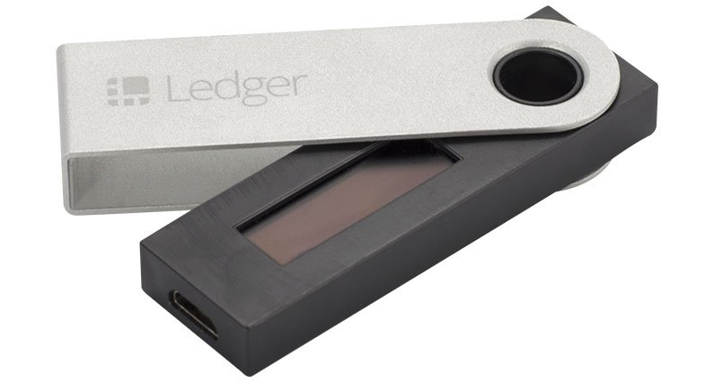

Ledger Nano S bemutató
Miért szükséges a hardver tárca?
Legnagyobb különbség a hagyományos pénzek és a kriptopénzek között, hogy ha elveszted a bankkártyád, bemehetsz a bankba és a személyidet felmutatva, kaphatsz egy újat. Kriptopénzek azonban nem személyiséghez vannak kötve hanem a privát kulcshoz.
Ez a privát kulcs szükséges ahhoz, hogy valaki tranzakciókat indítson egy tárcáról. Bárki akinek hozzáférése van a privát kulcshoz kezdeményezhet tranzakciót. Ezért nagyon fontos, hogy soha ne adjuk ki privát kulcsunkat.
Hardver tárcák megvédenek az ilyen dolgok ellen. Egy plusz biztonságot ad azáltal, hogy a privát kulcsot magán a tárcán tárolja. Az egyetlen módja, hogy valaki feltörje, az ha fizikai hozzáférése van a tárcához, vagy a 24 szavas biztonsági kifejezéshez.
Figyelj a biztonsági kifejezésedre!
A biztonsági kifejezés egy 24 szavas jelszó. Ezt egy papírra fel kell írnod, amit majd biztonságba kell helyezned. Ez a legfontosabb része, mert ez a biztonsági mentése a tárcának. Fontos, hogy ezt nagy biztonságban őrizzük, mert ha valaki hozzáfér ehhez, az olyan mintha ellopta volna a tárcádat. Semmi esetre se készíts fényképet vagy digitális másolatot erről a kifejezésről.
Ledger Nano S gyártója a Ledger SAS amely 2015-ben lett alapítva Franciaországban. Azóta jelentős hírnévre tett szert a Bitcoin és kriptopénz világban. Mindenképpen méltó versenytársa a többi hardver tárcának.
Ledger Nano S első beállítás:
Válassz egy 4 jegyű PIN-t.
Írd le a 24 szavas biztonsági kifejezést.
Töltsd le a tárca applikációkat a hivatalos Ledger weboldalról.
Felhasználói felület:
A Ledger Nano S felhasználói felülete nagyon jó felhasználói élményt nyújt. Használata nagyon hasonló többi hardver tárcához a piacon. Magát az eszközt két gomb segítségével irányíthatjuk.
Miután megadtuk a PIN kódot és leírtuk a biztonsági kifejezést, feltelepítjük az applikációkat, ezek az applikációk segítenek kriptopénzt küldeni és fogadni, tároláshoz azonban nincs közük.
Itt el is érkeztünk egy hátrányához. A Ledger Nano S csak 3-4 applikációt tud tárolni egyszerre, tehát le kell törölni valamelyiket ha plusz még egy fajta kriptopénzt szeretnénk tárolni. A letörölt applikációval a kriptopénzünk nem fog elveszni! Teljességgel biztonságban van akkor is ha nincs fent az adott kriptopénz applikációja. Inkább csak kellemetlen mindig cserélgetni a programokat.
Ledger Nano S működik meglévő kriptopénz tárcákkal is, ilyen például az Electrum, MyEtherWallet, MyCelium, Copay és Bitgo.
A cikk írásának időpontjában Ledger Nano S ezeket a kriptopénzeket támogatja
Biztonság:
A hardver tárcák képviselik a legnagyobb biztonságot amikor kriptopénzek tárolásáról van szó.
A személyi számítógépek könnyen feltörhetők, főleg, ha figyelembe vesszük, hogy egy átlag ember nem veszi komolyan a biztonságát (leggyakoribb jelszó: 123456).
A Ledger Nano S-nek külön chip-je és képernyője van. amely megakadályozza, hogy bizonyos képlopó programok fényképet készítsen a képernyőről.
Mint minden Bitcoin tárcának a Ledger Nano S-nek is van egy biztonsági kifejezése. Amikor egy mobil vagy számítógép tárca kifejezését írjuk le, az hackelhetővé válik. Azonban a Ledger Nano S saját OLED képernyőjét csak mi láthatjuk.
A privát kulcs az eszköz egy biztonságosan elzárt részén van, amely soha nem hagyja el azt, tehát egy hacker sem tud hozzáférni.
Mint minden hardver tárca a Ledger Nano S is új címet kap minden fogadott utalás után. Ezzel tovább növelve a biztonságot.
Amikor kriptopénzt küldesz valakinek a Ledger Nano S-el, az eszközön egy gombnyomással ezt engedélyezned kell. Tehát ha a számítógépedet fel is törték, nem lesznek képesek tranzakciót indítani hacsak nincs hozzáférésük fizikailag az eszközhöz.
Egy normál készpénz tárcával ellentétben, ha el is lopják ezt a tárcát, nem lesznek lépesek elkölteni a pénzt, a biztonsági kifejezés vagy a PIN kód nélkül, amely igazán biztonságossá tesz ezt az eszközt.
Ár:
79.00 € szállítási költséggel együtt.
GYÍK:
K: Mi történik ha elveszíted a
Ledger Nano S-t?
V: Rendelhetsz egy újat, és visszaállíthatod a
biztonsági kifejezéseddel.
K: Ha Ledger támogat egy új kriptopénzt, újat kell vennem?
V:
Nem, minden újonnan támogatott kriptopénz használható lesz a
meglévő tárcán. Csak a megfelelő applikávcót kell telepíteni.
K: A biztonsági mentés az összes kriptopénz fajtát
visszaállítja?
V: Igen, Minden kriptopénz visszaállítható egy
biztonsági kifejezéssel.
K: Mi történik ha elfelejtem a PIN kódomat?
V: 3 rossz PIN
kód beütésével vissza lehet állítani az eszközt a gyári
beállításokra, és a tárcádat pedig visszaállíthatod a biztonsági
kifejezéssel.
Záró gondolatok
A Ledger Nano S nem véletlenül a piacvezető hardver tárca. Minden kriptopénz rajongónak kötelező darab, hogy békésen tudjon aludni éjszaka. Rengeteg fajta kriptopénzt tárolhatunk egy könnyen használható felhasználói felületen.
*A Ledger Nano S a hatalmas kereslet miatt jelenleg csak előrendelhető. A szállítás Március 21-től fog megkezdődni. Csak a hivatalos weboldalról vagy hivatalos viszonteladóktól ajánlott vásárolni. A hivatalos viszonteladók listáját itt találod. Sajnos azonban Magyarországon egyelőre még nincsenek viszonteladók.


2018. Január 11.